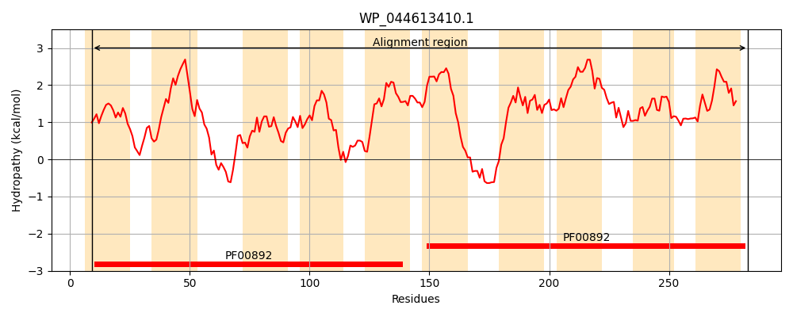
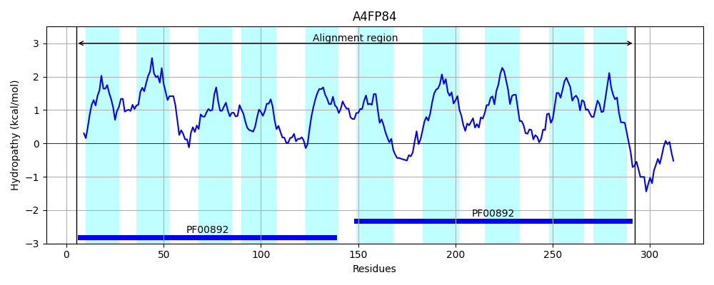
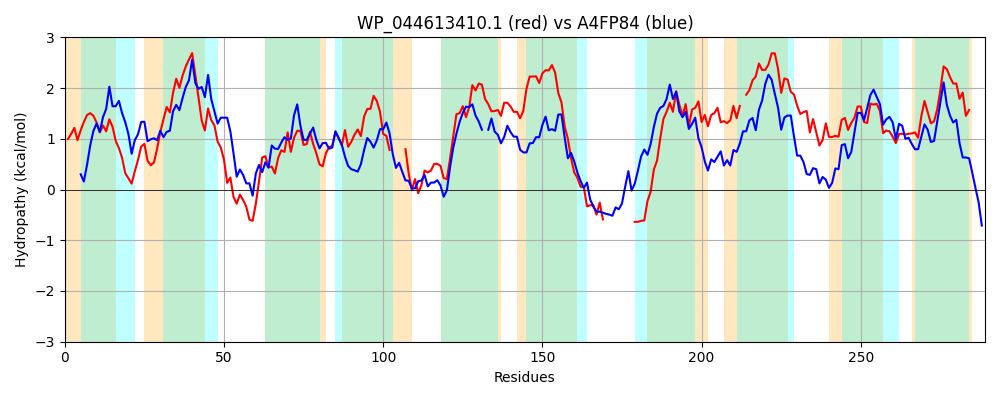

Hit Accession: A4FP84
Hit TCID: 2.A.7.3.11
Hit Description: gnl|BL_ORD_ID|394 gnl|TC-DB|A4FP84|2.A.7.3.11 Putative uncharacterized protein OS=Saccharopolyspora erythraea (strain NRRL 23338) GN=SACE_6693 PE=4 SV=1
Mach Len: 289
e:0.000000
Query TMS Count : 10
Hit TMS Count: 10
TMS-Overlap Score: 6.550000
Predicted Substrates:None
BLAST Alignment:
Score: 199 , Bit scores: 81 bits, E-value: 1.0e-17, Alignment length: 289, Percentage identity: 24
Query: 9 ASQATTAIFVLLWGSAAIFTRWGLDNASPMALLVFRFLIALVALAPLAIVRRRWLPAPGTRLQTAATGLMLIGGYSVCYFEAMANGVTPGLIATIMGIQPILT----LCVVERRLQGRRLSGLLIALAGLVLLVWRSLAASPMAMVGILFALAALLLMTFGALWQKRSRQ---------APADVLPLQYAVSLGLCLLIAPVSGFRFTVNAGL-IIPVLFLGLLISVVAQLLLYRLLSAGNIVNVTSLFYLVPAITALLDYLLLGNRLPAAAMVGMVAIIGGIVLVFRT 283
AS A LLWGS+ + + L+ SP + + R ++ + L L VR L + AT + F V GL I P+ T + + RL+GL + AG+VL ++ + G+L L A G ++ R +P + +Q + G + P+ G R L ++ + LG+L + +A + YRL++ +S+ YL+P ++ LL +L+L +L A + GM ++ G++L+ R+
Sbjct: 5 ASYYRLAALALLWGSSFLLIKVALEALSPTQVALTRIVLGALVLVALCAVRGIRLRGSAALWRRIATAGLFASALPWVLFGVGEQTVASGLTGVINATTPLWTALFGMLLARETPPKSRLAGLGVGFAGVVL-IFAPWQGGDLLTPGVLACLGAAASYGVGYVYIGRKLTGESLREHGLSPLALAAMQMIAAAGFAAIALPIDGLRPVHPEPLALLSLAVLGVLGTGIAFAMNYRLIADEGATTASSVAYLMPIVSVLLGWLVLDEQLGARVLTGMALVLAGVLLLRRS 292 | Protein Hydropathy Plots: |
|---|
|  |  |
Pairwise Alignment-Hydropathy Plot:
|
|---|
|  |